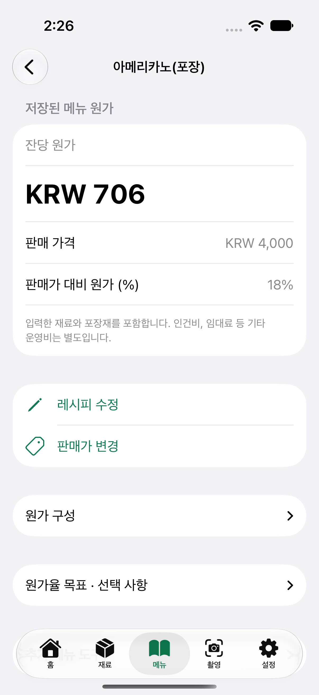
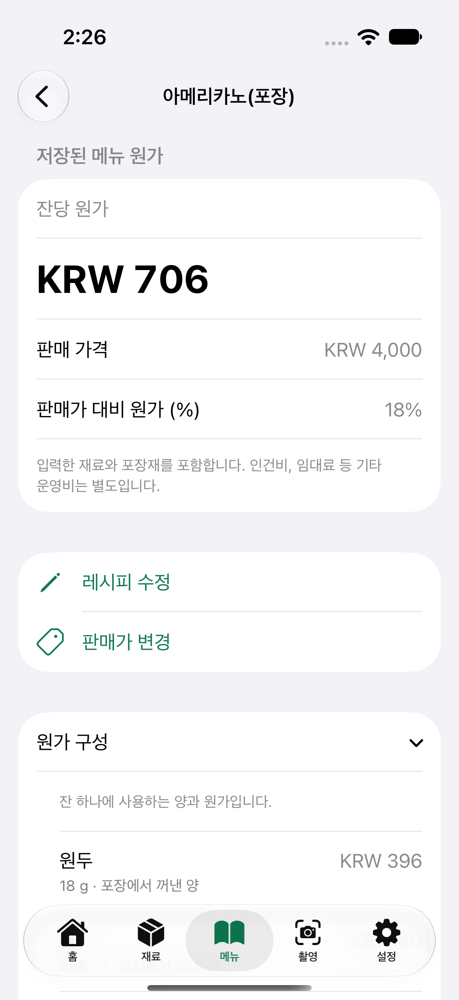
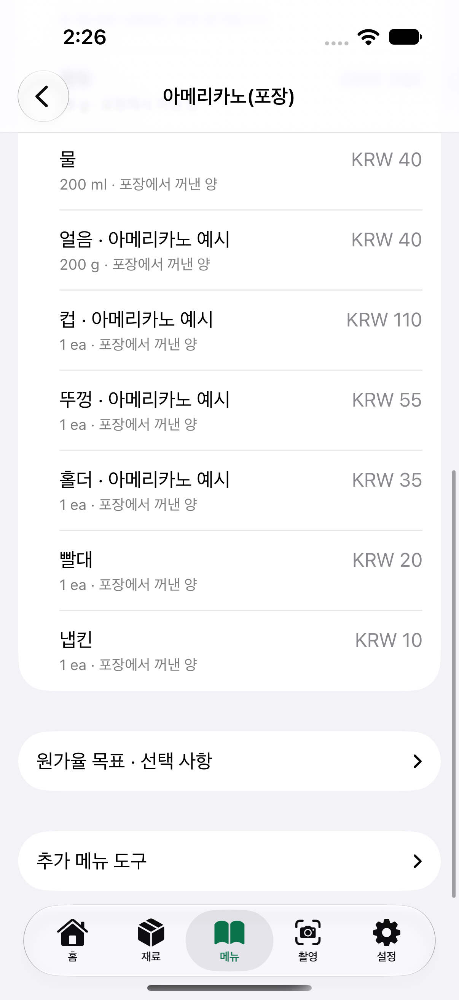

Café Cost Notes
How to Calculate Café Drink Costs: What Goes Into One Americano
An Americano’s ingredient and packaging cost is the sum of the beans, water, ice, and packaging actually used for the order. Under the assumptions below, that comes to ₩706 per cup.
This costing example was written by the developer of Kitchen Margin. All prices and quantities are illustrative assumptions, not records from an actual café.
| What is being calculated | Result |
|---|---|
| Ingredients | ₩476 |
| Packaging | ₩230 |
| Cost per cup | ₩706 |
| Cost ratio at a ₩4,000 price | 17.65% (about 17.7%) |
Purchase and recipe inputs for this example
All purchase prices are illustrative and include VAT. Packaging prices cover the full bulk quantity shown; ea means each. Replace these assumptions with your actual purchases.
| Ingredient / packaging | Full purchase quantity / price | Amount per cup | Cost used |
|---|---|---|---|
| Coffee beans | 1 kg · ₩22,000 | 18 g | ₩396 |
| Water | 2 L · ₩400 | 200 mL | ₩40 |
| Ice | 1 kg · ₩200 | 200 g | ₩40 |
| Cup | 1,000 ea · ₩110,000 | 1 ea | ₩110 |
| Lid | 1,000 ea · ₩55,000 | 1 ea | ₩55 |
| Sleeve | 1,000 ea · ₩35,000 | 1 ea | ₩35 |
| Straw | 1,000 ea · ₩20,000 | 1 ea | ₩20 |
| Napkin | 1,000 ea · ₩10,000 | 1 ea | ₩10 |
Water and ice are assumed to be purchased products here. These figures do not estimate the utility costs of a water filter or ice machine.
1. Calculate the ingredients for one cup
If 1 kg of beans costs ₩22,000 and you use 18 g per cup, the bean cost is 22,000 ÷ 1,000 × 18 = ₩396. Using 200 mL from 2 L of water costing ₩400 adds ₩40. Using 200 g from 1 kg of ice costing ₩200 adds another ₩40. The ingredient total is ₩476. A basic Americano contains no milk, so its milk cost is ₩0. Add milk separately for drinks such as lattes.
2. Include all packaging actually provided
A cup at ₩110, lid at ₩55, sleeve at ₩35, straw at ₩20, and napkin at ₩10 add up to ₩230. Divide the total purchase price by the quantity bought: 1,000 cups costing ₩110,000 work out to ₩110 each. Leave out packaging you do not provide and include anything you add.
3. Add the costs and check the cost ratio
476 + 230 = ₩706. At a selling price of ₩4,000, the cost ratio is 706 ÷ 4,000 × 100 = 17.65%, or about 17.7% rounded to one decimal place. Multiply each ingredient’s unit cost by the amount used, add those results, and then add packaging. The cost ratio is that total divided by the selling price.
Do not apply disposable cup and lid costs unchanged to drinks served in reusable cups. Record beans discarded while dialing in the grind or remaking drinks separately so you can check actual usage. When purchase prices change, update the prices used in your menu calculations.
Purchase prices and the selling price in this example all include VAT. This calculation covers ingredients and packaging; it excludes labor, rent, payment processing fees, and other operating costs. The cost ratio is not the net profit margin.
Follow along in the app
Set the currency to KRW in Settings. In Ingredients, register beans at 1 kg / ₩22,000, water at 2 L / ₩400, and ice at 1 kg / ₩200. Register the cup, lid, and other packaging separately using their actual purchase quantities and total prices. In Items, create “Iced Americano (Takeaway)” and set “Servings per batch” to 1. Add 18 g of beans, 200 mL of water, 200 g of ice, and 1 of each packaging item, then save. Check the ₩706 cost per cup and its cost breakdown, then enter the ₩4,000 selling price. You can find detailed steps in the Kitchen Margin English user guide.
Follow the example on screen
Genuine Korean-language screens from the released 1.2 app on an iPhone simulator. The inputs are illustrative; these are not café records.






The iPhone app Kitchen Margin automatically calculates cost per serving from the ingredients and packaging you enter.